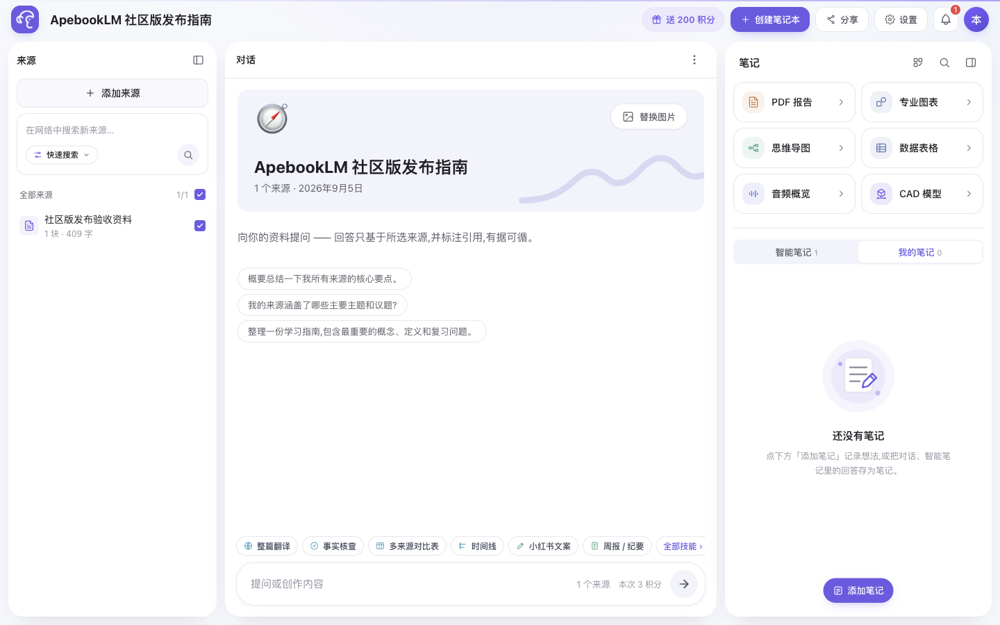

示例导览来自真实产品界面
把资料放在一起，
让答案有迹可循。
从中文资料出发，选择来源、核对引用、留下笔记。跟着五个界面，看看 ApebookLM 如何串起这条工作流。
使用示例数据，本页不处理文件、不调用模型。
引用问答 · 产品帮助示例
一个结论，一段可回看的原文。

在实际应用中，点击引用编号即可定位来源并核对对应文本。此处展示的是静态截图。
关于数据
这份静态导览不接收资料。实际部署中，选用的模型、搜索等外部服务可能接收完成请求所需的内容；自托管不自动等于完全离线。